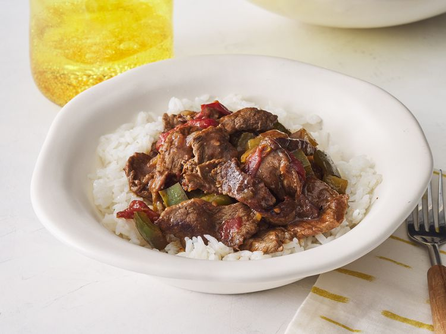

Home
Pepper Steak

Description
This slow cooker pepper steak always comes out tender and flavorful and is one of our family's favorites. It's great to make ahead of time and serve over rice, egg noodles, or chow mein.
Ingredients
- 2 Pounds Beef Sirloin
- 3/4 Garlic Powder
- 3 Tablespoons Vegetable Oil
- 1/4 Cup Hot Water
- 1 Tablespoon Cornstarch
- 1/2 Cup Chopped Onion
- 2 Large Green Bell Peppers
- 1 Can Stewed Tomatoes
- 3 Tablespoons Soy Sauce
- 1 Teaspoon White Sugar
- 1 Teaspoon Salt
Steps
- Gather all ingredients
- Sprinkle beef sirloin strips with garlic powder. Heat vegetable oil in a large skillet over medium heat and sear beef strips, about 5 minutes per side. Transfer to a slow cooker.
- Mix bouillon cube with hot water in a separate container until dissolved, then mix in cornstarch until dissolved.
- Pour into the slow cooker with beef strips. Stir in onion, green peppers, stewed tomatoes, soy sauce, sugar, and salt.
- Cover, and cook on High for 3 to 4 hours, or on Low for 6 to 8 hours.